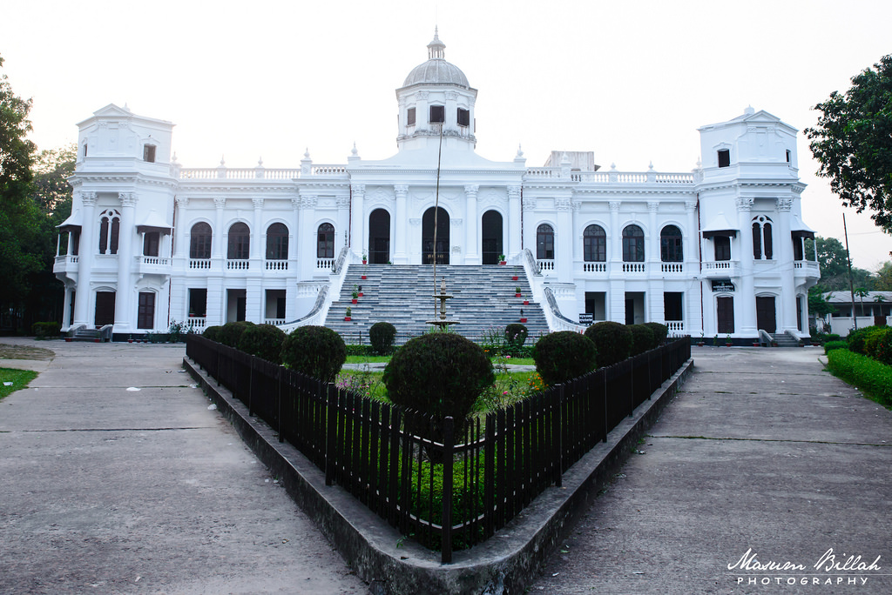
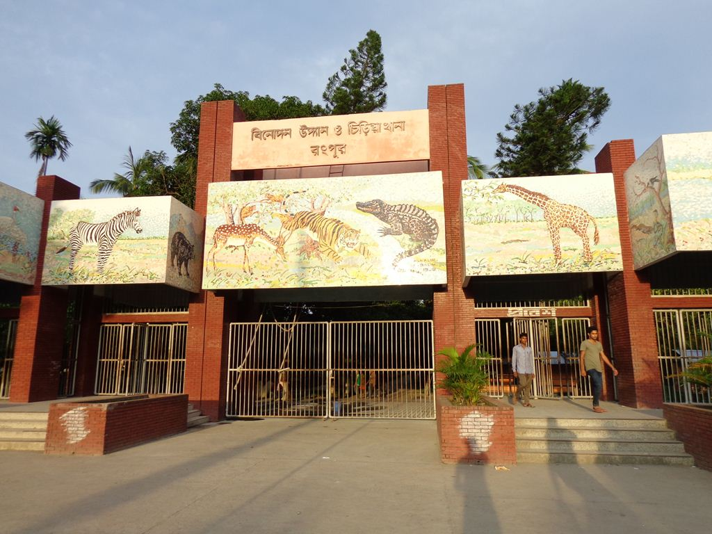
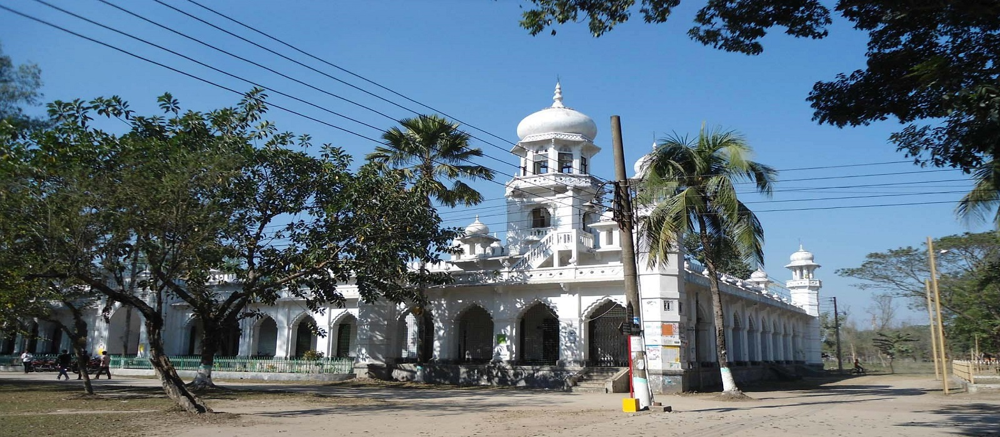

রংপুর
 তাজহাট রাজবাড়ি, রংপুর তাজহাট রাজবাড়ি বা তাজহাট জমিদারবাড়ি বাংলাদেশের রংপুর শহরের অদূরে তাজহাটে অবস্থিত একটি ঐতিহাসিক প্রাসাদ যা এখন একটি জাদুঘর হিসেবে ব্যবহৃত হচ্ছে। রংপুরের পর্যটকদের কাছে এটি একটি আকর্ষণীয় স্থান। রাজবাড়িটি রংপুর শহর থেকে দক্ষিণ-পূর্ব দিকে ৩ কিলোমিটার দূরে অবস্থিত। প্রাসাদটি বিংশ শতাব্দীর শুরুর দিকে মহারাজা কুমার গোপাল লাল রায় নির্মাণ করেন। এতে সময় লেগেছিল প্রায় ১০ বছর। মহারাজা গোপাল রায় ছিলেন হিন্দু এবং পেশায় ছিলেন একজন স্বর্ণকার। কথিত আছে, তার মনমুগ্ধকর 'তাজ' বা মুকুটের কারণেই এ এলাকা তাজহাট নামে অভিহিত হয়ে আসছে। জাদুঘরে নির্দিষ্ট প্রবেশ মূল্য পরিশোধ করে প্রবেশ করা যায়। প্রাসাদ চত্ত্বরে গাড়ি নিয়ে ঢুকতে চাইলে গাড়ীর জন্যও নির্দিষ্ট ফি দিতে হবে।
রংপুর থেকে বাস, সিএনজি অটোরিকশা কিংবা অটো ভাড়া নিয়ে মর্ডান মোরে আসতে হবে। শাপলার মোর বাজার থেকে কিছুটা সামনে এগিয়ে গেলে অটো রিক্সা চোখে পড়বে। শাপলার মোর থেকে ২ ৩ কিলোমিটার দূরত্বে তাজহাট রাজবাড়ি। বাসে করে শাপলার মোর থেকে তাজহাট রাজবাড়ি আসতে চাইলে থেকে না নেমে ২ কিলোমিটার সামনে ডিবির হাওর ক্যাম্পের সামনে নামলে গ্রামের রাস্তা ধরে মাত্র ১ কিলোমিটার হাটলেই ডিবির বিলে পৌঁছে যাবেন। শাপলা বিলে নৌকায় ঘুরতে চাইলে ৩০০ থেকে ৪০০ টাকা ভাড়া লাগতে পারে।
মর্ডান মোর রোডে বেশ কিছু রিসোর্ট গড়ে উঠেছে, চাইলে সেইসব রিসোর্টে থাকতে পারবেন অথবা থাকার জন্য রংপুর ফিরে আসতে পারেন। রংপুর শহরে প্রয়োজন ও সামর্থ অনুযায়ী বিভিন্ন ধরনের হোটেল পাওয়া যায়। সিলেটে উল্লেখযোগ্য আবাসিক হোটেলের মধ্যে রয়েছে হোটেল হিল টাউন, গুলশান, দরগা গেইট, সুরমা,কায়কোবাদ ইত্যাদি। এছাড়া শহরের লালবাজার এলাকায় বেশ কিছু মানসম্মত রেস্ট হাউস আছে৷ এগুলোতে ৪০০ থেকে ৩০০০ টাকায় সহজেই রাত্রি যাপন করতে পারবেন।
 বিনোদন উদ্যান ও রংপুর চিড়িয়াখানা বা রংপুর চিড়িয়াখানা বাংলাদেশের রংপুরে অবস্থিত একটি চিড়িয়াখানার। এটি দেশের উত্তরবঙ্গের মধ্যে সবচেয়ে বড় চিড়িয়াখানা। এটি ১৯৮৯ সালে প্রতিষ্ঠিত হয় এবং পরবর্তীকালে ১৯৯২ সালে দর্শনার্থীদের জন্য উন্মুক্ত করা হয়।[২] এখানে রয়েছে শিশু পার্ক, রেস্তোরা, কৃত্রিম হ্রদ এবং বিভিন্ন প্রজাতির প্রাণী ও বৃক্ষ।এখানে বিভিন্ন প্রজাতির প্রাণী রয়েছে; এর মধ্যে উল্লেখযোগ্য হচ্ছে সুন্দরবনের বেঙ্গল টাইগার, সিংহ, গণ্ডার, জলহস্তী, হরিণ, বানর, চিতাবাঘ, ভালুক, কুমির, অজগর, কচ্ছপ প্রভৃতি। এছাড়াও রয়েছে ময়না, টিয়া, ময়ূর, কাকাতুয়া, কবুতর, বক সহ বিভিন্ন প্রজাতির পাখি।
রংপুর থেকে প্রায় সকল প্রকার যানবাহনেই চিড়িয়াখানা যাওয়া যায়। লোকাল বাসে যেতে আপনাকে শহরের শিবগঞ্জে যেতে হবে সেখান থেকে জনপ্রতি ভাড়া লাগে ৮০ টাকা। সিএনজি বা অটোরিকশায় ১২০ থেকে ২০০ টাকায় চিড়িয়াখানা যেতে পারবেন। মাইক্রোবাস যাওয়া-আসার জন্য রিজার্ভ নিলে সারাদিনের জন্যে ভাড়া লাগবে ৩০০ থেকে ৫০০ টাকা। রংপুর নগরীর যেকোন অটোরিকশা বা সিএনজি স্ট্যান্ড থেকেই চিড়িয়াখানা যাতে পারবেন। দলগত ভাবে গেলে মাইক্রোবাস রিজার্ভ করে গেলেই ভালো, তাহলে আশেপাশের অন্যান্য যায়গা নেমে ঘুরে দেখতে পারবেন। ঠিক করার আগে ভাল মত দরদাম ও কি কি দেখতে চান তা ভালো করে কথা বলে নিবেন।
রংপুর এ জেলা পরিষদের বাংলো ছাড়া থাকার ভালো কোন ব্যবস্থা নেই। বাংলোতে থাকতে হলে আগে থেকেই বুকিং দিয়ে রাখতে হবে। তাই সাধারণত পর্যটকরা ফিরে আসেন। লালা বাজার এলাকায় ও দরগা রোডে কম ভাড়ায় অনেক মানসম্মত রেস্ট হাউস আছে৷ যেখানে ৪০০ থেকে ২৫০০ টাকায় বিভিন্ন ধরণের রুম পাবেন। এছাড়াও হোটেল হিল টাউন, গুলশান, দরগা গেইট, সুরমা,কায়কোবাদ ইত্যাদি হোটেলে আপনার প্রয়োজন ও সামর্থ অনুযায়ী থাকতে পারবেন।
 বাংলার গভর্নর লর্ড ব্যারন কারমাইকেলের দ্বারা ১৯১৬ সালে কারমাইকেল কলেজের যাত্রা শুরু হয়। প্রতিষ্ঠা লগ্নে রংপুরের কিছু শীর্ষস্থানীয় জমিদার গুরুত্বপুর্ন ভূমিকা রাখে। তারা ৩০০ একর জমিতে কলেজ ভবন নির্মাণের জন্য ৭৫০০০০ টাকা সংগ্রহ করে। জার্মান নাগরিক ড. ওয়াটকিন ছিলেন কলেজের প্রতিষ্ঠাকালীন অধ্যক্ষ। ৬১০ ফুট লম্বা ও ৬০ ফুট প্রশস্ত কলেজ ভবন যা বর্তমান বাংলা বিভাগ জমিদারি স্থাপত্যের এক অনন্য নিদর্শন। যা বাংলার সমৃদ্ধশালী ইতিহাস মোঘলীয় নির্মাণ কৌশলকে মনে করিয়ে দেয়। কারমাইকেল কলেজ কলকাতা বিশ্ববিদ্যালয়ের অন্তর্ভুক্ত করা হয়। ১৯১৭ সালে কলা বিভাগে উচ্চ মাধ্যমিক ও স্নাতক চালু করা হয়, উচ্চ মাধ্যমিক বিজ্ঞান ১৯২২ সালে ও বিজ্ঞান বিভাগে স্নাতক ১৯২৫ সাল থেকে শুরু হয়। ১৯৪৭ সাল পর্যন্ত এটি কলকাতা বিশ্ববিদ্যালয়ের অধীনে ছিল. দেশ বিভাগের পর ১৯৪৭ সাল থেকে ঢাকা বিশ্ববিদ্যালয় ও ১৯৫৩ সালে নতুনভাবে স্থাপিত রাজশাহী বিশ্ববিদ্যালয়ের অধীন করা হয় যা ১৯৯২ সাল পর্যন্ত ছিল। জাতীয় বিশ্ববিদ্যালয় প্রতিষ্ঠার পর কারমাইকেল কলেজ ১৯৯২ সাল থেকে জাতীয় বিশ্ববিদ্যালয়ের অন্তর্ভুক্ত হয়। ৭০০ একর ভূমির উপর অবস্থিত কারমাইকেল কলেজের সুবিশাল ক্যাম্পাস। ছায়া সুনিবিড় এই বিশাল প্রাঙ্গনে একটি ক্যান্টিন, একটি সুদৃশ্য মসজিদ, ছাত্র-ছাত্রীদের আবাসিক হল,বিভিন্ন বিভাগীয় ভবনএবং বিশাল দুটি খেলার মাঠ। ক্যাম্পাসের দক্ষিণে রংপুর ক্যাডেট কলেজ, উত্তরে রংপুর রেল স্টেশন ও ঐতিহ্যবাহী লালবাগ হাট-বাজার এবং চারপাশ ঘিরে গড়ে উঠেছে অসংখ্য ছাত্রাবাস।
রংপুর থেকে অনেক ভাবে রাতারগুল আসা যায়। রংপুর শহরের পাশের খাদিম চা বাগান ও খাদিমনগর জাতীয় উদ্যানের ভেতরের রাস্তা দিয়ে খুব অল্প সময়ে রাতারগুল পৌঁছানো যায়। এই পথে সিএনজি অটোরিকশা কিংবা জিপ নিয়ে শ্রীঙ্গি ব্রিজ যেতে হয়। রংপুর থেকে সকালে রাতারগুল গিয়ে বিকেলের মধ্যেই ফিরে আসা যায়। তাই সারাদিনের জন্য সিএনজি কিংবা অটোরিকশার ভাড়া ১২০০ থেকে ১৫০০ টাকা লাগবে। আর যদি সিলেটের আম্বরখানা থেকে লোকাল সিএনজি চড়ে যেতে চান তবে শ্রীঙ্গি ব্রিজ পর্যন্ত আসতে জনপ্রতি ১০০ টাকা ভাড়া। শ্রীঙ্গি ব্রিজ থেকে রাতারগুল জঙ্গলে ঢুকার জন্য জেলেদের ছোট ছোট নৌকা পাবেন। একটি ছোট নৌকায় ৪-৬ জন চড়া যায়। এমন একটি নৌকার ভাড়া ৪০০ থেকে ৮০০ টাকা।
রংপুর এ জেলা পরিষদের বাংলো ছাড়া থাকার ভালো কোন ব্যবস্থা নেই। বাংলোতে থাকতে হলে আগে থেকেই বুকিং দিয়ে রাখতে হবে। তাই সাধারণত পর্যটকরা ফিরে আসেন। লালা বাজার এলাকায় ও দরগা রোডে কম ভাড়ায় অনেক মানসম্মত রেস্ট হাউস আছে৷ যেখানে ৪০০ থেকে ২৫০০ টাকায় বিভিন্ন ধরণের রুম পাবেন। এছাড়াও হোটেল হিল টাউন, গুলশান, দরগা গেইট, সুরমা,কায়কোবাদ ইত্যাদি হোটেলে আপনার প্রয়োজন ও সামর্থ অনুযায়ী থাকতে পারবেন।